EEG Analysis
Thu Jan 01 1970 08:00:00 GMT+0800
基础
脑电图被定义为头皮表面记录到的大脑神经元产生的电活动。
主要源于大脑皮层大量神经元的同步突触活动，特别是锥体细胞。神经细胞的电活动主要有两种类型：动作电位和突触后电位；其中突触后电位持续时间长，作用范围大，是脑电活动的主要来源。
脑电技术是认知神经科学最主要的研究手段之一，在认知神经科学、心理学和生物医学工程等领域的应用愈发广泛和深入。脑电数据的分析方法主要包含时域分析、频域分析、时频分析、单试次分析、源定位、非线性神经动力学等。
由于大脑内在神经基础及其容积传导的复杂性，目前脑电的功能和意义还存在一些争议。
脑机接口速度的进步也体现了指数定律：2002 年，脑机接口的速率为 2 比特每分钟；2006 年约为 40 比特每分钟，即每分钟 5 个字母（ASCII 码长为 8 bit）；英文演讲或谈话的速率为 100-150 words 每分钟，根据平均单词长度可以算出每分钟谈话的信息码率。
除了 EEG 之外，用于非侵入式脑机接口的方法还有 MEG、fMRI、diffusion MRI、fNIRS 和 PET（正电子发射型计算机断层成像）等。
EEG 面临的问题是，只能测量大量神经细胞电位活动的叠加电位，即“脑波”，而无法检测更具体的神经信号，空间分辨率非常低；并且颅骨对信号有极强的衰减作用，仅靠外部几个离散的电极很难推算出来大脑几百亿个细胞的电活动。
DARPA 曾提出两个研究计划：加速学习计划和神经技术提升情报分析
加速学习计划（The Accelerated Learning program ）主要专注于非侵入性测量与任务学习相关的神经和其他生理数据，最终目标是实现个人学习效率翻倍。
神经技术提升情报分析（Neurotechnology for Intelligence Analysts）计划的目标是利用非侵入式脑电位记录，开发新型脑机接口系统，以显著提高图像情报分析的效率。卫星和无人机侦查能力的不断提升，产生了庞大的图像数据，因此带来了利用有限的分析资源进行快速有效图像搜索和分析的挑战。当人看到感兴趣目标时候，会产生事件相关电位 P300，一般延迟在 300 毫秒。把卫星图片切割成小部分，以每秒钟 0.5-10 张的速度播放给图像分析员，通过 EEG 记录脑活动。随后目标可能性最高的图片进行最终审查和评估。除了提高分析效率，更重要的是，脑电位信号与目标细节无关，也就是说 NIA 计划开发的脑机接口系统能够随时适用于各种目标的搜索。因此省去了计算机视觉方案检测新目标所需要的繁琐参数调整。在利用超过 40 名专业图像分析员进行的正式评估当中，对比传统的图像分析流程， NIA 系统实现了分析效率提升 10 倍 ，而不损失目标检测灵敏度。
神经科学的确需要机器学习或者说 AI 的辅助，毕竟现在我们对人脑的理论还停留在“计算机隐喻”的初步阶段，外加一大堆都能自圆其说但无法成为完整体系的经验性理论。
脑电的测量
在个体进行认知加工的过程中，大脑总是伴随着局部或者全局的神经元振荡。之前研究表明神经元振荡与 EEG 的形成有着紧密联系，感觉、知觉、情绪和记忆等均和特定的振荡模式有着一一对应的关系。
在整个神经系统的空间分布和时间尺度上都能观察到神经元的振荡活动。数以万计神经元之间的信息交互产生了不断起伏变化的大脑 EEG 信号，这些信号均可以通过脑电图来反映其活动。这里，EEG 反映的是平行对齐的锥体细胞突触后电位（跨越突触的电化学信号）的胞外电流总和。
神经电活动会产生电流偶极子，导致电流在大脑这样具有不均匀电传导率的导电介质中传导。
脑电信号具备较好的时间分辨率可以反映毫秒级的大脑变化，捕捉到信号的瞬时信息。但是，脑电信号的幅度非常微弱，常在 10 uV 到 100 uV 范围之间变化，这就需要在脑电实验过程中有效避免各种干扰（如，噪音、肌电和头动等）来保证 EEG 信号质量。
脑电的非线性体现在两个方面，一是时间上采用了非线性的度量来刻画连接强度；第二网络连接构建后，整个网络的拓扑结构也表现出“小世界”，“无尺度”这些非线性特征。脑电的非线性最终体现为时间上的自相似特性。
在使用电极帽采集脑电的过程中，为了减少信号失真，每个电极与头皮接触的阻抗应小于 10KΩ。
在绘制脑电图及 ERP 的过程中，通常将纵坐标轴反向绘制，即向上的电位为负，向下为正。这是因为大脑皮层与电极之间的结构相当于电容，电极采集到的值为负时，大脑皮层的电极为正。
三个测量层次
脑电的测量可以在三个层次上进行：
- 单个神经元细胞的动作电位（用膜片钳测量，10mv 级别，um 尺度）；
- 神经核团的局部场电位（LFP），反映神经元之间的电位传导（电位与动作电位相反，1mv 级别，mm 尺度）；可在大脑中植入小尺寸的电极来记录。
- 脑电图 EEG，头皮外的脑电信号（0.1mv 级别，cm 尺度），是锥体细胞突触后电位（开放电场）的总和，因为突触后电位变化很慢，容易同步。被视为经过时空平滑的 LFP 信号。
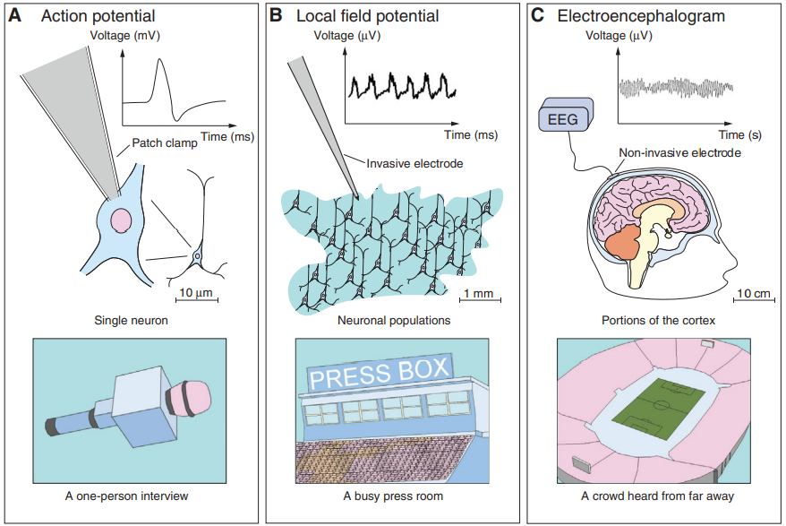
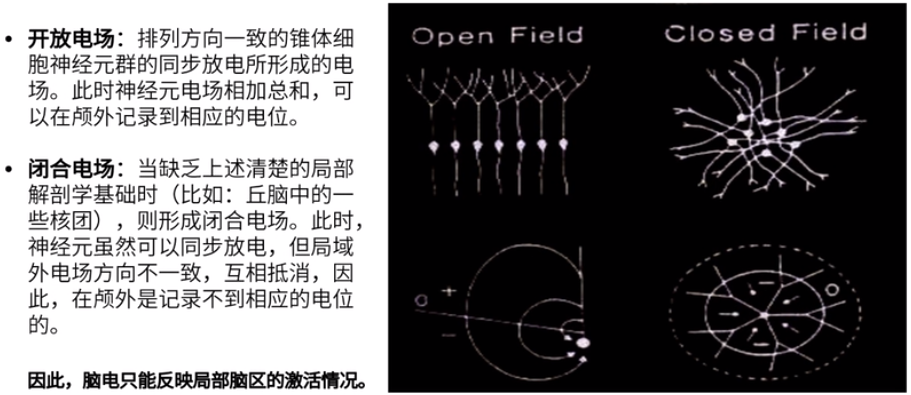
脑电的频率成分
不同的波段成分
EEG 信号在人类处于不同的意识状态下会产生出不同的节律。按频谱分布范围，脑电可以分为五种节律，分别是 Delta 波（0-3 Hz）、Theta 波（4-7 Hz）、Alpha 波（8-13 Hz、Beta 波（14-30 Hz）以及 Gamma 波（30 Hz 以上）。且随着频率的升高，振幅会减小。
其中 Alpha 波之所以被命名为 Alpha 波，是因为其是最早被发现的波段，在清醒成年人的脑电中占主导地位，大概每秒 10 个波峰。
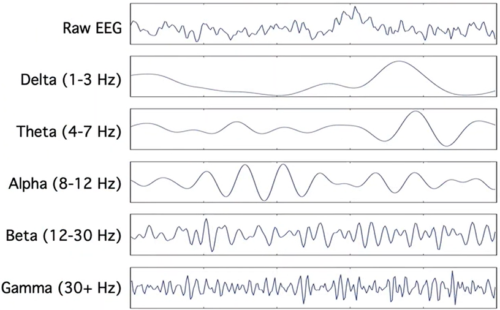
这五个频段可以分为两种类型：
- Delta、Theta 和 Alpha 属于全局信息加工模式，它们涉及很多的大脑皮层区域，同时被认为通过不同皮层区域的神经元集合在同步相干活动和相位耦合上来实现信息整合的目标；
- Beta 和 Gamma 属于局部脑电活动模式，它们对应着高频率和低幅值，主要分布在局部脑区。多项研究表明在不同频段的 EEG 活动与感觉、知觉和认知操作等有关。
Delta->Theta->Alpha->Beta 的流程符合人一天的状态变化，即： 深度睡眠-> 浅睡眠-> 放松-> 集中注意力
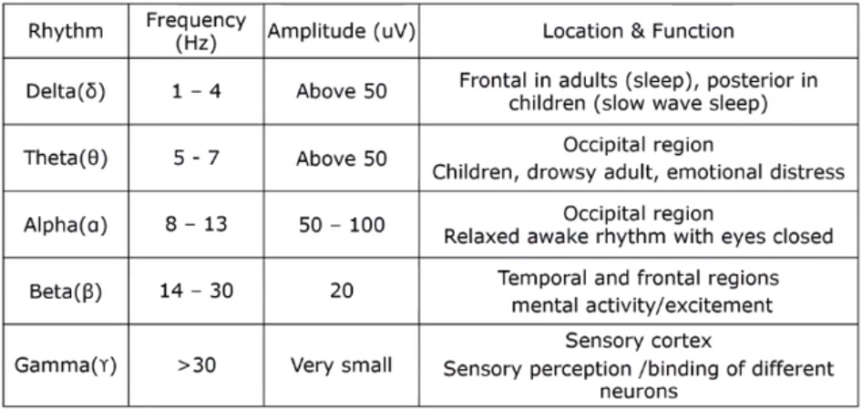
其中 Delta 节律在睡眠期间、极度疲劳或者麻醉状态下会出现，可能是大脑皮层处于抑制状态；Theta 节律在成年人困倦时候出现；而 Alpha 节律则在成年人中占主导位置，与最高级的大脑系统有关，它在个体闭眼时增多，睁眼时则减少。
Beta 节律是个体睁眼视物或受到其它刺激时出现，对应着人们解决实际问题和对外界事物信息的认知加工过程，也是大脑皮层处于紧张状态的标志；Gamma 节律特征可以通过计算其尖峰时间相关性和对应的局部场电位波动来分析人类的感官处理机制。然而，在 EEG 测量下很难记录到该振荡模式的大规模波动。目前为止，大脑内的 Gamma 振荡对外界感觉刺激的动力学响应性质仍然无法被完全量化，所以其相关的神经计算意义仍未能完全被阐明。以上五种不同频段的脑电波具有明显的个体差异，波形和幅值在个体间都会有很大的变化。
锁时与锁相成分
对于外部的刺激，大脑会产生 3 种不同的类型活动，分别是：Evoked Activity、Induced Activity 和 Oscillatory Activity。其中，Evoked Response 和 Induced Reponse 虽然神经生理基础不同，但是都描述了大脑活动与外部刺激之间的相位关系。Evoked Response 是自下而上的驱动过程，是与外部刺激锁相的；Induced Response 是自上而下的调节过程，下外部刺激非锁相。
在认知任务中，通常既产生 Evoked Response 又产生 Induced Response。目前常用的区分二者的手段是，首先通过叠加平均得到锁相的 Evoked Response 成分，然后将单试次信号减去 Evoked Response 的时频变换，就得到了 Induced Response。
如果某个脑电成分既是锁时的又是锁相的，则可以通过叠加平均后的趋势来体现，例如 ERP 信号。
通常在给定外部刺激之后，即会出现锁时锁相的 ERP 信号，还会出现仅锁时的事件相关去同步化（event-related desynchronization，ERD）和事件相关同步化（event related synchronization，ERS）信号。例如，当安静闭眼时，枕叶区皮层会出现事件相关同步化（ERS），神经活动 Alpha 波段的相位趋于同步，EEG 振幅增加。睁眼时神经活动的相位去同步，EEG 振幅抵消减小，这一过程也被称为 $\alpha$ 阻断。
ERD/ERS 信号锁时，所以振幅极值的包络线是一致的。但是由于不锁相，经过叠加平均之后振幅会趋于 0. 计算 ERD/ERS 可以采用时频分析方法（对单次实验数据做视频分析，最后将各次时频数据平均叠加）进行，以去掉相位信息，仅保留能量信息。
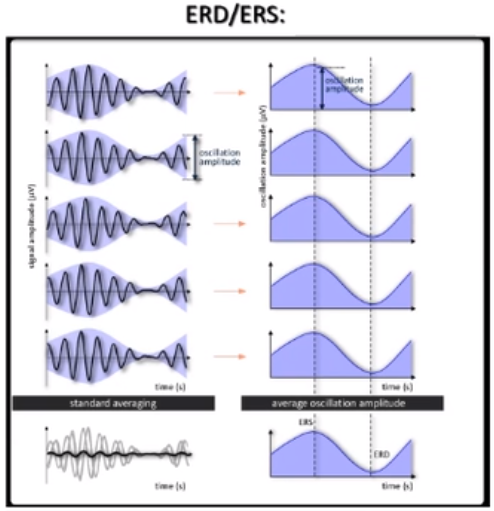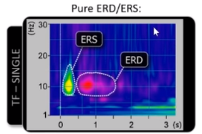
事件相关电位 ERP 成分
EEG 分为自发和诱发两类，诱发 EEG 又分为 ERP（低于 2Hz）和 SSEP（3.5-75Hz）。早期的脑电活动成分较弱，需要叠加 80-100 个 Trial；晚期的认知相关的脑电活动成分较强，信噪比高，需要叠加 30 个 Trial。
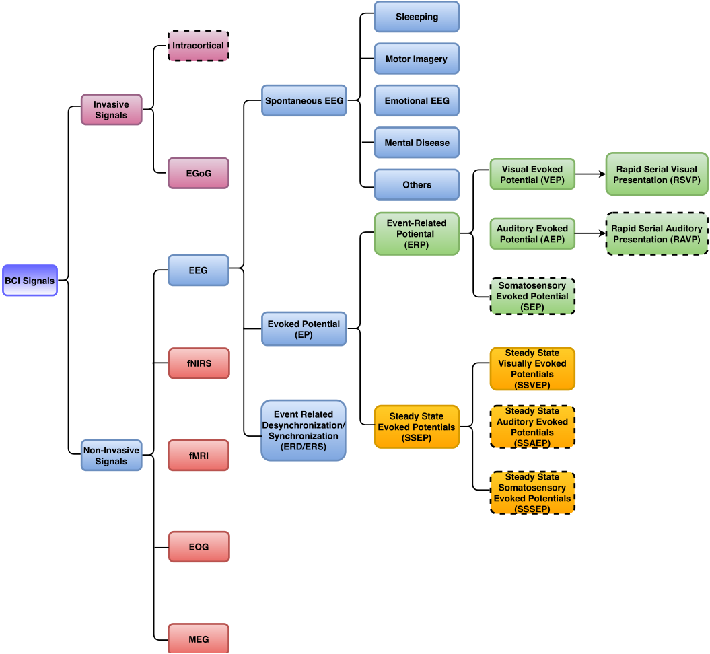
ERP 的波形
EEG 信号进行叠加产生的事件相关电位（Event related potential, ERP）常被作为研究心理认知因素的重要工具，其幅值范围在 2uV 到 10uV 之间。计算 ERP 的过程中通过在时域上进行跨试次平均叠加来提高信噪比。不同的 ERP 成分，如 P1、P3、伴随性负波（Contingent negative variation, CNV）、失匹配负波（Mismach negativity, MMN）和 N400 等，对应不同的心理认知过程。
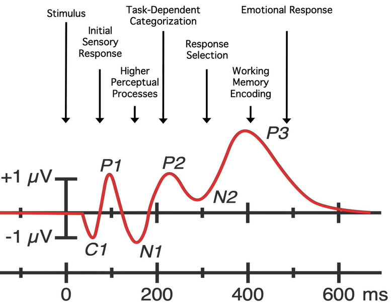
注意：早期的 ERPs 文献中，由于缺少计算机的帮助，正电压是向下的，负电压是向上的。现在的文献中可能采用任一种种绘制方法，读者需要注意纵轴的符号。
- 对于视觉刺激，刺激呈现之后首先出现的是初级视觉皮层的 C1 波，出现于 40-60ms。C1 波可以为正或负，所以没有被命名为 N 或 P。当刺激在注视点之上时，C1 为正波，反之为负波。
- P1 成分常出现在视觉刺激后 60-90 毫秒间，其最高峰位于两侧枕叶区域，它与空间注意的方向有关，同时受到个体觉醒水平的影响。对于听觉试验，可能不会出现 C1 和 P1 成分。
- N1 或称 N170 成分： [该文章](Tanaka J W , Curran T . A Neural Basis for Expert Object Recognition[J]. Psychological Science, 2001, 12(1):43-47.)通过实验证明了领域专家在对领域内对象的图片处理过程中，会呈现 N170 反应。例如，普通人在看到人脸图片时比看到汽车图片时，会呈现更强的 N170 成分。同样，听觉刺激也会呈现同样规律的 N1 成分。
- N2 或称 N250 虽然是正电位，但因为其前方是电位较高的 P2，所以其被命名为负波。其在视觉刺激后出现，与视觉对象的熟悉程度相关。
- P3 成分的最大波幅常在顶叶出现，通过 Oddball 实验范式研究发现，靶刺激对应的 P3 幅值大于标准刺激的幅值，表明 P3 波幅与被试投入的心理资源量为正相关关系。
- N400 是研究大脑语言加工的一种成分，句子符合正常的语法和语境不会诱发 N400，当句子中有单词出现明显歧义时，在这个歧义词后 400 毫秒出现的负波成分。下图显示了 N400 和字体放大引发的惊吓反应 P560。

- P600：当句子中有语法错误时，会在 600ms 左右引发正向的 ERP 波形。
- C1、P1 和 N1 都与视觉有关，因此明亮的刺激或熟悉的视觉内容能诱发出更加显著的上述 EPRs 波形。
- N2pc 是指刺激后 200ms 至 300ms 出现的对侧脑后（posterior-contralateral）负波（Negative），是一种与空间选择性注意（主要是内隐注意）密切相关的 ERP 成分，反映了对当前任务相关刺激所进行的空间选择加工。
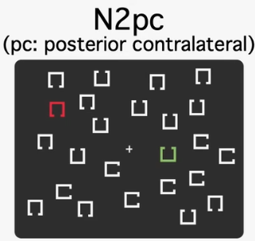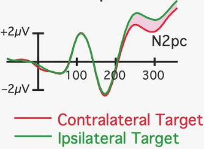
CNV 是在实验中预备信号和命令信号间产生的 EEG 负性偏转成分，它是个体在完成同一种任务时由期待、意动、觉醒和注意等多种心理因素综合组成的一种加重的心理负荷[60]。MMN 是靶刺激产生的 ERP 减去标准刺激产生的 ERP 得到的差异波，常在 100-250 毫秒出现的负波，研究发现它是非随意注意开启的现象。这些 ERP 成分可以有效地捕捉相关认知过程，有助于客观地对心理学认知功能进行测量和研究。
听觉诱发电位
听觉诱发的响应可以在几毫秒内产生，主要通过脑干传入丘脑，是高度自动化的过程，被称为脑干听觉诱发电位（BAEP），通常需要数千个试次才能叠加得到。新生儿的早期听力评估就是使用 BAEP 进行评估的。
视觉诱发电位
视觉典型的 ERP 成分有 C1, P1, N1, … , P3 等，其中 C1 和 P1 对刺激的属性敏感，P1 和 N1 在连续相同的视觉刺激下容易出现不应期。
痛觉诱发电位
常用的痛觉实验方法是激光诱发电位（LEP）。
触觉诱发电位
触觉实验包含触觉识别和震动检测。
稳态诱发电位
对周期性刺激产生的稳定响应被称为稳态诱发电位，常见的有稳态听觉诱发电位、稳态视觉诱发电位和稳态触觉诱发电位。
ERP 的潜伏期
根据 ERP 在刺激呈现后出现的时间，可以将其分为早、中、晚三种成分。早期成分是大脑自发的判断活动；中期成分是大脑的信息筛选过程；晚期成分是大脑的心理活动。
视觉的早中晚分界线为：200ms 以前，200-300ms，300-500ms。视觉刺激呈现后约 40ms 之后才会出现响应，500ms 之后被称为慢波。
听觉的早中晚分界线为：10ms 以前，10-50ms，50-500ms。
ERP 的噪声
ERP 是由同类型的原始脑电信号经过叠加平均之后得到的。不仅仅使用同一位被试的数据进行平均，还使用所有被试的数据进行平均，这被称为“总平均”。
平均过程中需要的试次数量依赖于信号数据的信噪比，或许需要 10 次，或许需要上百次。例如，Oddball 试验通常需要较少的试次叠加就可以呈现。信噪比的增幅是试次数量的根号，例如，将试次数量加倍，信噪比会变成原值的 1.41 倍；将试次数量增加 4 倍，可以将信噪比提高 2 倍。
噪声 又被称为伪迹，其来源非常广泛，可以分为 3 个主要的方面：
- 非刺激诱发的脑活动。例如，起始于施加刺激信号之前的 $\alpha$ 波段脑电波。
- 生物电信号。例如，眨眼和眼动引发的眼电伪迹；头部和脖子运动引发的肌电；皮肤产生的缓慢变化的皮肤电位。
- 感应电。例如，环境中交流电通过导体时形成的振荡电磁场。
ERP 的误解
在解读 ERP 的过程中，最重要的是理解 ERP 中波峰波谷与脑区脑电成分的关系。例如，某个电极的 ERP 波形和附近脑区的活动形式可能为如下关系：
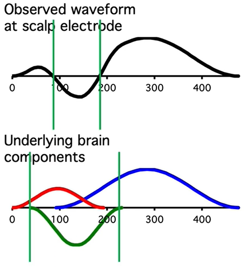
脑电实验与数据采集
实验设备
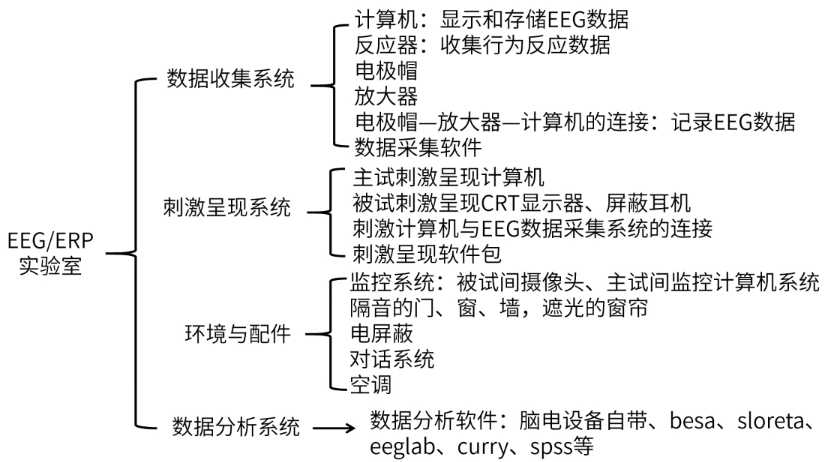
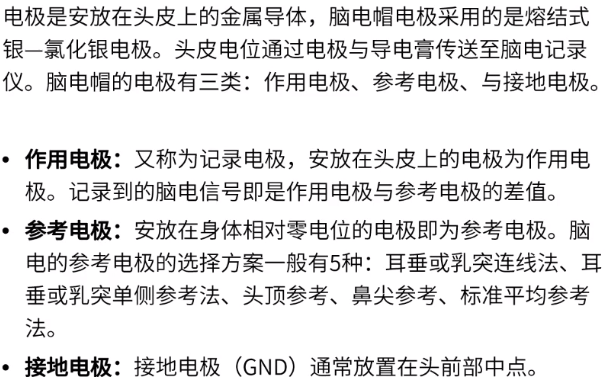
ANT 脑电设备默认是采用头顶参考，将头顶 GND 作为参考；
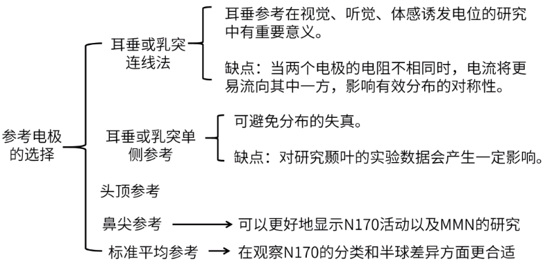
实验设计
认知心理学存在一个基本的假设：信息加工是以心理表征为基本单元的。我们对心理表征的构建、存储、提取以及操纵被称为认知过程。
另一个假设是：不同的认知过程对应于不同的 ERP 成分。但是很难在 ERP 成分和认知过程之间建立起一对一的对应关系。
ERP 的优点是时间分辨率较高，便于探讨认知加工在时间维度上的特点，可以用于研究时间维度上相邻的多个认知过程。
主要缺点是空间分辨率太低，很难仅依靠 ERP 来揭示大脑特定区域的活动模式。
另一个缺点是仅能反应皮层锥体神经元的突触后电位活动，难以研究大脑皮层下（如脑干以及杏仁核、海马体、基底神经节等边缘系统）神经中枢的活动。
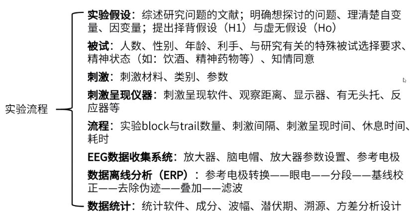
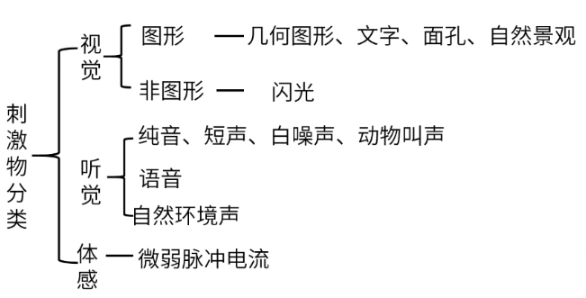
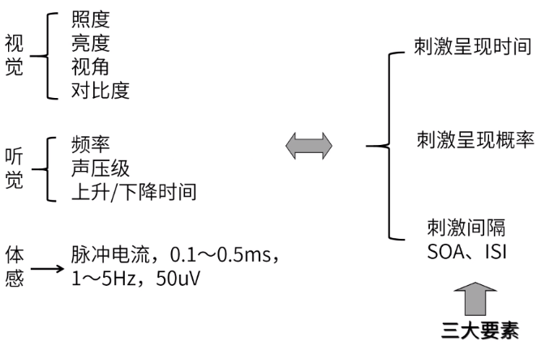
常用的实验设计软件：
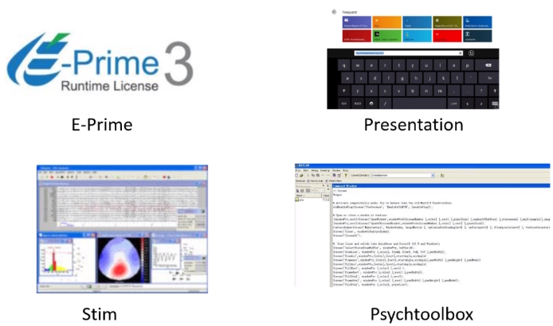
数据基本预处理
数据预处理流程：
- 重参考，可使用总平均电位作为参考；
- 滤波去噪（1-40Hz 带通滤波，去掉工频和信号漂移），有时为了保留完整 Gamma 信号，也做 50Hz 的陷波滤波；
- 信号剖分（以刺激之前和之后为端点剖分 Trial）；
- 剖分之后，对每个 Trial 进行基线校正，以刺激事件前 0.5 秒的均值作为基线；
- 去除趋势，去除数据中的直流趋势；
- 基于概率的 ICA（Probabilistic ICA）进行盲源信号分离及去噪，主要去除两种分量：能量集中于前额页的眼电伪迹（极性均匀的眨眼与极性相反的眼动），地形图不连续的噪音伪迹；
下采样
奈奎斯特采样定理：
在进行模拟/数字信号的转换过程中，当采样频率大于信号中最高频率 fmax 的 2 倍时，采样之后的数字信号完整地保留了原始信号中的信息。一般实际应用中保证采样频率为信号最高频率的 2.56～4 倍，最好取 5-20 倍。
在下采样的过程中，相当于在频域进行周期延拓，不同周期的频谱很容易交叠。所以需要预先使用抗混叠滤波器进行低通滤波，防止产生信号混叠。简单理解，可以认为去除不满足采样定理的高频成分。两个步骤合称为 decimator。
相反，在升采样中，需要首先进行插值升采样，然后使用抗镜像滤波器进行低通滤波。两个步骤合称为 interpolator。
在 MATLAB 中 resample 函数包含了采样和低通滤波的操作。
主成分分析（PCA）与去噪：
主成分分析的主要目的是降低数据的维度，通过主成分分解和主成分合成，用于去除无用的噪声信号。
协方差与相关系数：
协方差 cov 表示两个变量在变化过程中是否是同方向的变化。
$$
Cov(x,y) = \frac{1}{m} \sum_{i=1}^m (x_i - \bar x)(y_i - \bar y)
$$
相关系数 corrcoef 是用以反映变量之间相关关系密切程度的统计指标。计算相关系数的过程中要用到协方差，所以相关系数也可以看成特殊的协方差：一种剔除了两个变量量纲影响、标准化后的特殊协方差,它消除了两个变量变化幅度的影响，而只是单纯反应两个变量每单位变化时的相似程度。
$$
r(x,y) = \frac{Cov(x,y)}{ \sqrt{\delta_x} \sqrt{\delta_y} }
$$
其中，$\delta_x , \delta_y$ 表示 x，y 的方差；$|r| \leq 1$ 。
PCA 分析：
主成分分析的本质是降维，用低维空间沿坐标轴方向的向量来描述高维数据。因为数据矩阵的特征向量就是最接近数据矩阵坐标轴的向量，所以 PCA 分析的主要过程是特征值分解。
在主成分分析中，主要方法是将数据的协方差矩阵对角化（计算特征值和特征向量），使对角线上的数值最大，非对角线元素接近 0 。这样不同的成分之间耦合最小，每个成分自身的方差最大。
原始数据乘以特征向量即得到了主成分。在 Matlab 中可以使用以下函数计算 PCA：
1 | %% initialize parameters |
独立成分分析（ICA）
独立成分分析（ ICA ）是一种分离线性混合源的技术，其目的并不是去噪，而是从混合的信号中分解出具有物理意义的独立信号源。最经典的 ICA 应用是鸡尾酒会问题（盲源分离问题）：为了得到 N 个演讲者的声音，需要使用 N 个独立的话筒采集会场的声音。
ICA 的特性：
- ICA 只能分离线性混合的源；
- 由于 ICA 处理的是点云，因此改变点的绘制顺序(EEG 中的时间点顺序)对算法的结果几乎没有影响。
- 改变通道顺序(例如在 EEG 中交换电极位置)也不会影响算法的结果。对于脑电信号来说，该算法对电极位置没有先验知识，ICA 分量在大多数情况下可以被解析为一个等效偶极子，这证明了 ICA 能够分离出皮层同步化的致密区域。
大多数 ICA 算法在实际应用 ICA 之前需要执行数据白化（球化）预处理，数据的白化过程（类似 PCA 过程加上方差归一化过程）删除了数据中的所有相关性，即不同的通道必须保证不相关。
可以直观地认为 ICA 算法通过最小化投影在两个轴上数据的高斯性来将数据进行旋转。
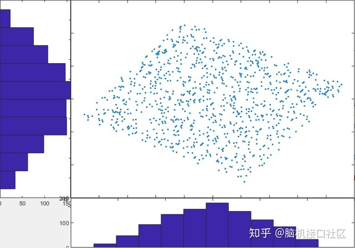
研究结果表明，ICA 可以有效地检测，分离和消除 EEG 记录中的各种伪迹，其结果与使用基于回归或基于 PCA 的方法获得的结果相比更具有优势。基于 ICA 的伪影校正可以通过线性分解从 EEG 数据中分离并去除多种伪影。ICA 方法基于以下假设：
1）在头皮上记录的时间序列是时间上独立的大脑和伪迹活动的空间稳定混合物，
2）并且大脑，头皮和身体不同部位产生的电势之和为在电极上呈线性关系，
3）从源到电极的传播延迟可以忽略不计。
代码实现：
ICA 算法有比较出名的实现： fastICA 。在 ICA 算法中包含了 PCA 的计算过程，不需要预先作 PCA 去噪；另外，fastICA 也内置了数据白化的过程。完整的程序可以参考：“OneDrive\整理的文档\脑科学与心理认知\相关代码\卢家锋 Lu, Chia-Feng\fastICA.7z”。
1 | path(path,'.\fastica_25'); |
在实际应用中，对大量数据进行手动分析效率太低，可以在 fastICA 操作之前，额外使用 PCA 自动确定保留的独立成分数量。还可以将独立成分分别与原始信号计算相关性，去掉与原始信号重要通道相关性低的，或去掉与原始信号中噪音通道相关性高的。
频谱分析
快速傅里叶变换：
1 | %%! 生成 N/sample_rate = 2S 长的数据 |
窗函数：
对于整数个周期信号，FFT 的结果能很好地表示时域信号的频域分布，若信号为非周期截断，则频谱会出现拖尾。对于一般信号，经 FFT 处理之后会在不存在能量的频带出现了能量，即“泄漏”，在采样数据上加窗函数可以减小泄漏。
窗函数作为权重与信号相乘之后，信号的起始时刻和结束时刻幅值都为 0，将信号转化为了单周期的周期信号。
Hanning 窗在大多数场合很有效，由于它具有良好的频率分辨率，并降低了频率泄漏。
基于 FFT 的 Welch 方法：
首先将信号重叠分段，然后计算各自的频谱，最后对频谱进行平均。
1 | %%! 定义参数 |
滤波器：
最常用的滤波器是 IIR 滤波器。
三阶滤波器的主要参数有两个 stop 频率、两个 pass 频率、衰减增益、振荡幅度等。如下图所示，f=[stop1, pass1, pass2, stop2] ，stop 和 pass 之间的频带越窄，则需要的滤波器的阶数就越高，计算就越慢；a = [0, 1, 0] ，即表示滤波器为带通滤波器；dev = [dB, ripple, dB]，表示两侧阻断频率的增益和中间通过频率的波动幅度。
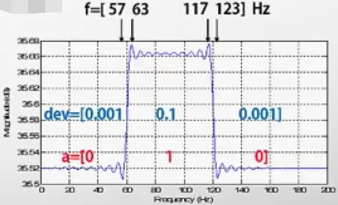
动态信息分析
动态信息分析主要对脑电信号进行单次分析（single-trial analysis）。
节律信息分析
节律信息分析主要用于分析脑电中的时频信息。由于脑电被各种内部状态和外部因素所调节，它的频谱一般是非稳态的，需要使用频谱分析来描述脑电信号功率沿频率的分布特征。特别是在 ERP 试验中，感觉刺激或认知任务可以增强或减弱脑电在特定频段的节律幅度，这些事件相关的频谱变化被称为事件相关同步化（ERS）或事件相关去同步化（ERD）。
在节律信息分析中，常采用周期图和 Welch 法进行频谱估计；采用短时傅里叶变换（STFT）和连续小波变换（CWT）进行时频分析。
电极间相位分析
通过计算不同通道之间的相位一致性可以得到通道之间的锁相值（Phase-Locking Value，PLV）。
$$
PLV(f) =| \frac{1}{M} \sum_{m=1}^M e^{i(\phi_{a,m}-\phi_{b,m})}|
$$
其中，M 是试次 trails 数量；a, b 是电极通道；$\phi$ 是信号的相位角。
在上述公式中，当 a，b 通道含有相同的成分时，PLV 的计算会引发假阳性。所以后续提出了许多改良的计算方法，比较常用的有 Stam 提出的 Phase lag index 即 $PLI(f)$ 方法、Vinck 提出的 weighted Phase lag index 即 $wPLI(f)$ 方法等。其中 wPLI 方法是较为推荐的。
功率谱分析
频谱估计可以将时域信号变换到频域，并可提供信号的功率、幅度或相位等沿频率的分布曲线。频谱估计的数学定义是指从一个随机过程的系列时间样本中估计该随机过程的谱密度。在功率谱密度分析中，最常用的是基于 “Welch 平均法” 和周期图方法。
频谱估计的目的是通过观察对应周期的频率峰值来检测信号的周期性。在频谱分析中，通常计算一段时间内脑电信号在几个特定频段或节律($\theta , \delta, \alpha , \beta , \gamma$）内的功率。计算功率谱密度的过程采用快速傅里叶变换，功率谱密度可简称谱密度或功率谱，单位是 $V^2/Hz$ 或 dB（即 $10log_{10}(V^2/Hz)$）。
时频分析
在频谱或功率谱分析中有一个基本假设：一段脑电信号的频谱是固定的。这种假设过分简化了脑电图的非平稳和动态特性，无法识别非平稳脑电信号的时变频谱特征。在真实情况中，脑电频谱可以通过外部实验条件或内部心理状态进行动态调制，因此脑电频谱的时变特征传递着重要的信息。例如，脑电频谱可随着睁眼/闭眼、睡眠阶段 、冥想状态等心理和生理状态的变化而呈现显著变化。
时频分析技术（TFA）涵盖了一系列联合研究信号时域和频域特征的方法，其中主要的时频分析技术有两种：时频功率分布估计和时频信号分解。
时频功率分布估计用于估计信号在时频域上每一个特定的时间和频率点的功率量，流行的方法包括短时傅里叶变换和连续小波变换。
时频信号分解则是将信号分解为一组具有特定时频特性的叠加成分，其典型方法包括离散小波变换，匹配跟踪和经验模式分解方法。
傅里叶变换的缺点是仅适合时不变信号的分析。对于时变信号，两个相差很大的时变信号也可能具有相同的频谱或功率谱。因此，需要进一步进行时频分析。
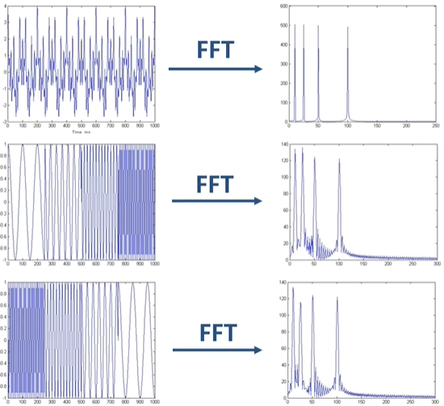
常用的时频分析方法有短时傅里叶变换（STFT）、连续小波变换（CWT）和希尔伯特变换，这些变换基本上是一致的。其中短时傅里叶变换仅有窗口长度一个参数，所以用的较多。
短时傅里叶变换通过在信号上移动小的时间窗口（如汉明窗）并计算窗口内叠加信号的功率谱密度，即可得到二维的时频图。
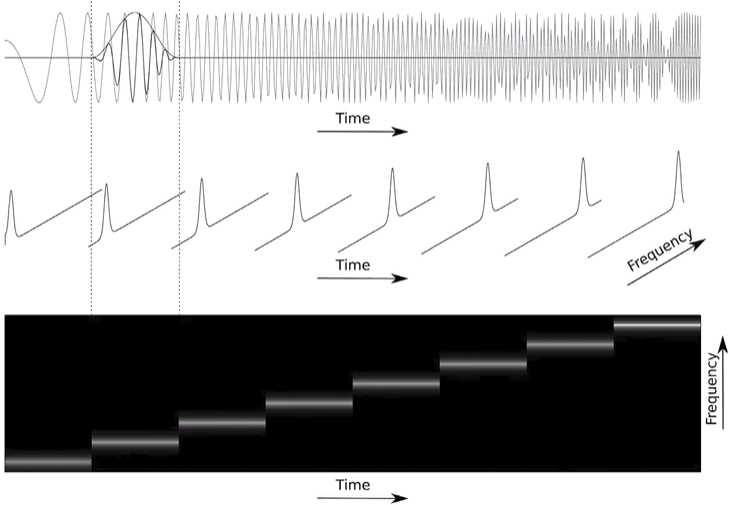
时频图反应了信号的频谱随时间的变化关系。
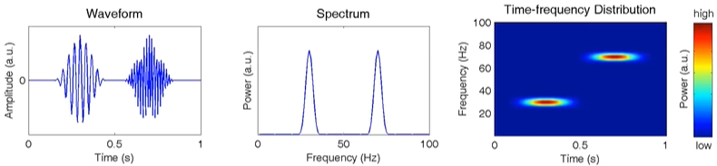
短的时间窗口具有较高的时间分辨率，但是频率分辨率较低；
长的时间窗口具有较高的频率分辨率，但是时间分辨率较低。
使用 STFT 计算频谱：
1 | %%! 生成 N/sample_rate = 2S 长的数据 |
1 | %%! 生成 N/sample_rate = 2S 长的数据 |
连续小波变换：
连续小波变换（CWT）有两个重要的参数 a 和 b 用于调整母小波的波形，分别称为延展参数和平移参数。
$$
\psi_{a,b}(t) = \frac{1}{\sqrt a}\ \psi(\frac{t-b}{a} )
$$
延展参数 a 的大小与母小波的频率成反比，与母小波的窗口宽度成正比。a 增大时，母小波会延展（窗口宽度增加，频率分辨率增加）；a 减小时，母小波会收缩（窗口宽度减小，频率分辨率降低）。
平移参数 b 的大小表示母小波在时间轴的平移，b 小于 0 时，母小波的波形向左侧偏移，b 大于 0 时，母小波的波形向右侧偏移。
$\psi_{1,0}$ 被称为母小波。小波的时间与频率特性包含：中心时间、中心频率、时间范围、频率范围（带宽）。在实际应用中，往往需要指定待分析的中心频率，反向计算小波的参数。
1 | %%! 生成 N/sample_rate = 2S 长的数据 |
1 | %%! 生成 N/sample_rate = 2S 长的数据 |
事件相关同步/去同步化
时频分析在脑电中最常见的用途是检测和分析 ERS/ERD，ERD/ERS 也被称为事件相关频谱扰动（ERSP）。大量的脑电研究表明，感觉刺激或认知事件不仅会产生 ERP，还会对脑电功率谱进行瞬时调制，这种调制表现为特定频段频谱功率的增加或减小。
ERP 是锁时锁相的，通常在时域中进行研究。进行跨试次时域平均即可有效抑制非锁相的噪声及其它分量，以提取 ERP 波形。
ERD/ERS 是锁时但非锁相的，通常在时频域进行研究，无法在时域平均中提取其特征。ERS/ERD 并非仅可以从时频分布中估计，在神经工程应用（如 BCI）中，单试次 ERS/ERD 估计的实时性是必须要考虑的关键问题，所以也会采用带通滤波后估计一个特定频段的频谱包络等快捷、方便的方法来计算 ERS/ERD。
估计 ERS/ERD，主要采用时频分析方法将单试次脑电信号转换为时频分布，然后将单试次时频分布进行平均，最终得到 ERS/ERD。主要计算流程为：
- 以一定的次数重复感兴趣的实验事件；
- 对脑电数据进行预处理，去除噪声和伪迹；
- 将脑电信号切分成若干试次；
- 对每个试次的信号进行时频分析；
- 跨试次平均时频分布，进行基线矫正。
因为 ERD/ERS 的起始时间和频率范围均可以传达关于大脑动态功能的重要信息，所以建议使用与 CWT 中类似的频率自适应窗口估计 ERS/ERD：在高频节律中使用短窗口，在低频节律中使用宽窗口，并且特定频率对应的窗口应覆盖至少一个周期（通常为 2-3 个周期）。例如，在 10Hz 频率处使用的窗口大小至少应为 100ms，但是在非常低的频率区间，窗口也不能过长，否则时间分辨率将严重降低。在实践中，通常需要尝试许多可能的参数并选择能够实现最佳视觉效果或统计合理的时频分布参数。就 STFT 而言，一般 200-300ms 的固定窗口可以得到较好的 ERS/ERD 结果。
在 ERS/ERD 研究中，另一个重要的问题就是如何选择合适的色标绘制 ERS/ERD 的时频分布。脑电频谱功率随频率的增加急剧下降，在频率之间高度不平衡：低频分量具有比高频分量大得多的功率。高频段上事件激发的强节律变化很可能被淹没在功率更强的低频信号中。
相位分析与锁相
如果在不同的试次中，相同时间和相同频率分量的相位角具有一致性，那么该信号就具有锁相特性。上述计算过程也被称为 $PLV(t,f)$，计算公式为：
$$
PLV(t,f) = | \frac{1}{M} \sum_{m=1}^M e^{i \phi_{t,f,m}} |
$$
其中，M 是试次的数量；i 是虚数单位；$\phi$ 是每个试次中时刻 t，频率为 f 的分量的相位角。
如果某个信号的 $PLV(t,f)$ 接近于 0，则说明该信号是非锁相的。
如下图左侧所示，对所有试次加和平均后进行时频分析，仅可得到锁时锁相的 ERP 成分。若先对于单个试次做时频分析，然后对视频数据进行平均，即可得到右图所示的锁时锁相的成分 ERP 和锁时非锁相的成分 ERD/ERS。
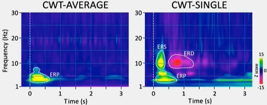
若跨试次计算 $PLV(t,f)$ ，同样也可得到锁相的 ERP 成分，与上图的结果相一致。这就说明了 $PLV(t,f)$ 是一个可以判断信号是否锁相的指标。
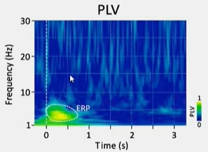
相位振幅耦合
相位振幅耦合（Phase-amplitude coupling, PAC）是实际信号中非常常见的一种现象，指信号中低频成分的相位与高频成分的能量（振幅）隐藏的耦合关系。
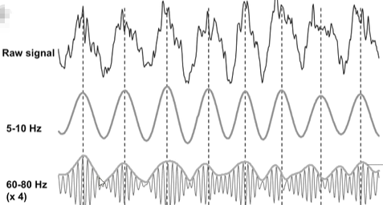
PAC 的计算有三个步骤：首先对信号进行低通和高通滤波，得到低频和高频分量；然后进行希尔伯特变换，得到高频成分的振幅和低频成分的相位；最后计算两者的相关性。
相关性的计算有两种主要方法：
- The Envelope-to-Signal (ESC) measure (Bruns and Eckhorn, 2004)
$ESC = Correlation(Amp_{HF}, X_{LF})$ - The Modulation Index （MI）
$MI = | Average( Amp_{HF} * e^{i \phi_{LF}} ) |$
微状态分析
网络信息分析
网络信息分析主要对脑电信号进行连通性分析。
相关性分析
同调性（magnitude-squared coherence）：
$$
coh_{xy}(f) = | \frac{ S_{xy}(f) } { \sqrt{ S_{xx}(f) S_{yy}(f) } }|^2
$$
其中，$S_{xx}(f), S_{xy}(f)$ 分别代表信号 x 的功率谱密度和信号 x 与 y 的交叉功率谱密度。
时频互信息
时频互信息（time-frequency cross mutual information, TFCMI）
步骤一：信号滤波、去噪；
步骤二：使用小波变换将各通道的 EEG 信号转化为某个频段上的二维时频图；
步骤三：对二维时频图的每个时间点进行加和平均，得到各通道在某个频段上的功率序列；
步骤四：对任意两两通道计算时频互信息。
计算各功率的概率和联合概率，并依据互信息计算方法进行计算。
度量脑区间的连接关系
EEG 经过溯源之后可以映射到脑区的皮层上，可以反映出脑区之间的连接关系，度量连接强度的方法，包括相干(coherence)，相位同步，延迟指数(phase lag index)，同步似然指数(synchronization likelihood)等。
不同的大脑网络以不同的频率通信：包括海马的中颞叶以 4-6 Hz 的频率活动，后顶叶则是 8–23 Hz，感觉运动皮层则在 32-45 Hz。有点类似通讯里的频分多址技术，大脑采用同步活动的不同频率来发挥功能。毫无疑问，用 EEG 构建功能连接，进行频段划分，大小频率区别对待，非常必要。
结构连接
功能连接
功能连接是指不同神经集群活动的时间相关性。功能性连接的分析方法主要有两种：线性连接分析和非线性耦合分析。
线性连接分析
相关性平方数（Magnitude squared coherence, MSC）或者相干（Coherence, COH）可以用来测量频域上的线性连接。
COH 分析方法可以用来测量不同频带上信号的空间相关性。COH 对于能量改变和相位改变之间的关系是很敏感的，即如果一个信号的能量和相位中的一个发生改变，相干值都会受到影响；如果整个时间段上两个信号的原有关系没有改变，那么相干值也会保持不变。
非线性耦合分析
基于确定性混沌的非线性耦合技术用来测量动态 EEG 信号目前得到了很好的发展。非线性耦合技术基于的理论是很多重要的神经进程都存在非线性特征。
其中，同步的概念被引入用于测量神经连接，同步可以被认为是震荡对象之间的节律调整，因为震荡对象间存在着微弱作用。在神经科学领域，同步主要是通过相位同步和广义同步来表现。当被试加工认知任务的时候，相位同步常见为 Gamma 频段内大规模震荡，即在短时间内进入精确的相位锁定。同时，相位同步常被作为病理的研究机制，如癫痫的发病机制。在相位同步方法中，相位锁时值（Phase locking value, PLV）能够提供不同脑区相位同步的统计测量值。
因效连接
有效连接是一个神经系统对其它神经系统直接或者间接的影响，通常描述为脑区之间的动态定向信息交互。通常有两种方法来确定因效连接：
基于模型的方法
Friston 等人的研究中基于神经集群模型提出了相应的动态因果模型（Dynamic causality model, DCM）。DCM 的基本原理是根据已知信息，对可能的连接进行多种假设，然后利用贝叶斯来对假设连接进行筛选，最后保留在假设连接中最优的模型[85]。
基于数据驱动的方法
基于数据驱动的技术不需要假定特殊的模型或空间和时间关系的先验知识。其中格兰杰因果（Granger causality, GC）是典型的数据驱动有效连接技术。GC 假设用两者过去的信息去预测结果比单独用一种过去的信息预测更有效，那么第二个信号就能作为第一个信号的因。
后续在 GC 的基础上发展出了定向传递函数（Directed transfer function, DTF）和部分定向相干技术（Partial directed coherence, PDC）被应用到双变量的情况中。
基于这些方法，研究者发展出了动态的网络分析方法，如，自适应定向传递函数（Adaptive directed transfer function，ADTF）和时变多元变量分析技术等[88]，能够捕捉到瞬态的网络信息，在认知研究中具有潜在的应用价值。
参考文献
- Makeig, S., Debener, S., Onton, J., Delorme, A., 2004. Mining event-related brain dynamics. Trends Cogn Sci 8 (5), 204-210.
- Biasiucci A , Franceschiello B , Murray M M . Electroencephalography[J]. Current Biology, 2019, 29(3):R80-R85.
- A Survey on Deep Learning based Brain Computer Interface
- 基于脑电的决策网络研究 司亚静
- 胡理老师-脑电数据分析_bilibili
- 脑电理论基础（入门）_bilibili
- ERP 课程入门教学视频[Course Materials: Introduction to ERPs]_bilibili
- 胡理老师讲脑电理论_bilibili
- http://blog.sina.com.cn/s/blog_60a751620100fy9g.html